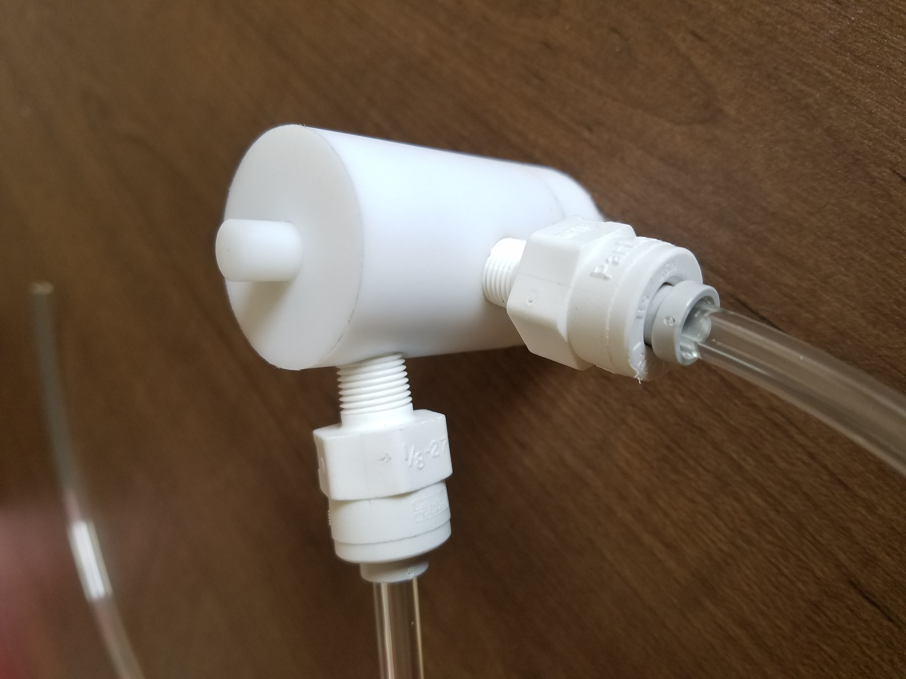
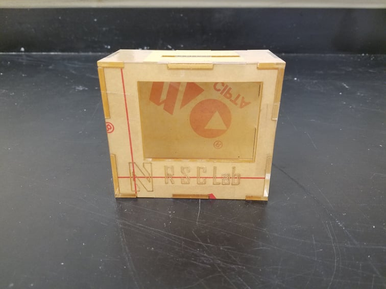
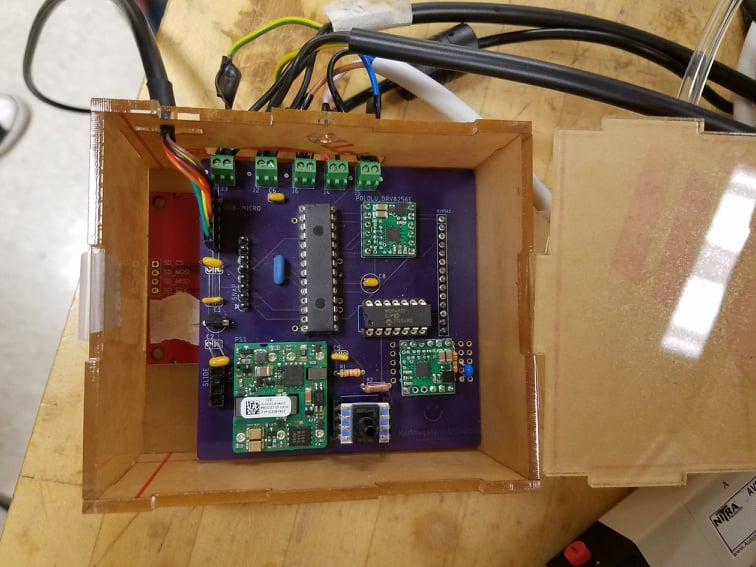
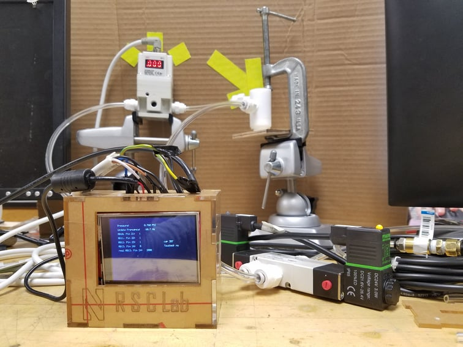
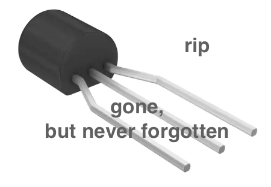

Portable, Hands-Free, MRI-Compatible Tactile Stimulation Device
Northwestern University's Robotics & Sensorimotor Control Lab's very own reverse button
Overview:
This research project contributed to the Robotics and Sensorimotor Control Lab’s efforts in improving our understanding of human somatosensory perception in their upper limbs. The overall project goal is to identify the reason for tactile perception deficits in individuals with stroke. My contribution to this project was to advance a proof-of-concept mechatronic device to one that could be used for pilot testing. The desired deliverables are the development of hardware and software to permit automated control of the mechanical stimuli applied to an individual’s fingertip. The system now includes, in addition to the actuator fabricated in the previous quarter, a pressure regulator, pressure sensor, PIC32-powered controller, and serial communication via a computer for automated control of and data collection from the device.
Scope:
The scope of the project is to apply a tactile stimulus to an individual’s fingertip in an MRI environment. Requirements for the device include sufficient robustness and flexibility for travel between testing environments and future development. The pneumatic device consists of six (6) main components connected via polyurethane tubing and polypropylene connectors (for pneumatic output) and cables (for electrical control). An air supply capable of outputting at least 20 psi is also required. The system pipeline, as visualized in Figure 1.1.1 below, begins with a PIC32 microcontroller. This microcontroller controls the pressure regulator output in order to designate the receiving chamber of the actuator via a double solenoid. A Honeywell pressure sensor is incorporated in the path to the bottom chamber only for additional feedback on the accuracy of the pressure regulator output before the output pressure reaches the PTFE end-effector. Accurate control of the top chamber is not feasible due to air leaks through the opening for the piston, so there is no sensor or regulator connected to the top chamber.

Technical Objectives:
The following requirements were placed on the project for the corresponding justifications:
MRI Compatibility - The tactile stimulation will be analyzed using fMRI. The device and all connected components within the MRI room must be composed of non-magnetic materials. The strength of typical scanners, such as those used at the Northwestern University Center for Translational Imaging, range from 1.5T to 3T. Extreme caution is required with any conductive materials due to the potential dangers of the MRI unit, such as RF heating and the conversion of “normal” objects of magnetic material into projectiles.
Robustness - Due to the frequent travel between the Evanston and Chicago campuses required for testing, the revised design must be neatly containable with minimal assembly and disassembly required. All components should be securely soldered or utilize the proper dual in-line package (DIP/DIL) socket. Control should be executed through serial commands to limit hardware requirements and eliminate any unnecessary areas of potential failure as much as possible. Additionally, a custom case to protect the controller circuit must be designed and implemented.
Automatability - In order to streamline the testing procedure (and also to minimize the required hardware while still maintaining all controller capabilities), control of the system should be executed purely digitally through serial communication. This also ensures that all controls are clearly labeled and in one place to make control intuitive for all users, regardless of technical background.
The following deliverables are required for the completion of this project:
Documentation - Information in this report will serve as a manual for the device. Specifically, this manual will cover the design, assembly, and any notable limitations of the system. When appropriate, links to source files, CAD files, datasheets, and other supporting documents will be provided and cited. Rationales will also be provided for design decisions.
Fabrication - Manufacture of the pneumatic cylinder, printed circuit board (PCB), controller case, hand interface, and all additional hardware components required must be completed and assembled so that the device is ready to use upon the project’s completion.
Demonstration - A demonstration of controller features for future reference is also required. Any user, regardless of technical background, should have at least a basic understanding on how to use the device from the recorded demonstration(s).
Design Considerations:
Circuit:
The scope of the project is to apply a tactile stimulus to an individual’s fingertip in an MRI environment. Requirements for the device include sufficient robustness and flexibility for travel between testing environments and future development. The pneumatic device consists of six (6) main components connected via polyurethane tubing and polypropylene connectors (for pneumatic output) and cables (for electrical control). An air supply capable of outputting at least 20 psi is also required. The system pipeline, as visualized in Figure 1.1.1 below, begins with a PIC32 microcontroller. This microcontroller controls the pressure regulator output in order to designate the receiving chamber of the actuator via a double solenoid. A Honeywell pressure sensor is incorporated in the path to the bottom chamber only for additional feedback on the accuracy of the pressure regulator output before the output pressure reaches the PTFE end-effector. Accurate control of the top chamber is not feasible due to air leaks through the opening for the piston, so there is no sensor or regulator connected to the top chamber.
Although the circuit design was based off of the original design by Alexander Hay, there were some hardware and software chages necessary to meet the project requirements. The original MIC2940A voltage regulator was replaced with a DC to DC converter to simplify the circuit, as the DC DC converter could convert the already present 24 V input into the necessary 5 V for the H-bridges and pressure sensor. A new digital pressure regulator was used, as the previous regulator was a significantly more expensive and more difficult to obtain. The new regulator was still able to control the pressure output over a wide enough range; when pushing back against the extended piston, the that the resistance experienced when pushing back on the extended piston was clearly noticeable towards either end of the spectrum (low pressure vs high pressure output). Two H-bridges were introduced to control the solenoid valve and pressure regulator digitally rather than with hardware such as a toggle switch and dial. Both the pressure regulator and solenoid valve were controled via pwm, but only the analog signal for the pressure regulator required an additional RC low-pass filter. The proper resistor, capacitor, and frequency values were determined through extensive testing of different combinations of variables. Slide switches, as seen in the pcb and circuit diagrams above, were also incorporated to allow the user to quickly connect and disconnect the circuit components from power for debugging and any potential emergency situations.
Cylinder:
The system was built using components from the MRI-Compatible Tactile Stimulation Device created by Alex Hay. The actuator was designed loosely based off of the air cylinder designs of iPolymer, in collaboration with experts at Northwestern’s Segal Prototyping and Fabrication Lab.
Numerous materials were initially considered for the mechanical design, including PTFE (Teflon), Delrin/Acetal, HDPE, and nylon. PTFE was chosen as the cylinder material for its natural slipperiness, machinability, and desirable results in materials testing, as previously conducted by Professor Netta Gurari. The cylinder features two chambers to push the enclosed piston up and down the length of the cylinder. The barrel was machined and tapped first using a conversational mill, with calculated dimensions inspired by the iPolymer design.
The resulting dimensions can be viewed in the part drawings included in the appendix. In the current design, the two holes are offset by a little less than 90º to ensure that the connectors do not interfere with each other due to the cylinder’s short length.
Software:
It was decided to move away from hardware-based controls to limit potential mechanical failures and costs as much as possible, but also to keep the controls and any necessary visualization in one place.
This was done by using four pins to control the pressure regulator and the solenoid valve. As seen in the pcb design above, pins B12 and B13 are used to control the solenoid valve H-bridge and pins B10 and B11 are available (so they were used for the second H-bridge set up in the development area).
Unfortunately, the solenoid required a much higher pwm frequency and the pressure regulator signal required a much lower frequency. To address this, the two sets of pins utilized different timer/period pairs to achieve different frequencies (50 Hz for the solenoid valve and 100 Hz for the pressure regulator).
To ensure that control of the system remains strictly digital, an additional friendly Python UI to collect, visualize, and store data was implemented.
Hardware and Construction:
This mechatronics project requires a variety of parts that can be organized into subsystems of the overarching project.
Dual-Action Cylinder:
* 1-1/4" Diameter Chemical-Resistant Slippery PTFE Rod (1')
* 2.62 mm Wide, 17.86 mm ID Oil-Resistant Buna-N O-Ring (pack of 25)
Pneumatics Hardware:
* California Air Tools Light & Quiet 1P1060S Portable Air Compressor
* Firm polyurethane tubing for air and water, 1/8" ID, 1/4" OD
* Polypropylene Push-to-Connect Tube Male Connector, 1/4" Outside Diam, 1/8 NPTF
* ¼” FNPT - ¼” Tru-Flate design T-style Plug
* SharkBite ¼” OD x ¼” MIP Male Adapter
* Push-to-Connect Tube Fitting for AirStraight Connector, for 1/4" Tube OD (x10 or as needed)
* Push-to-Connect Tube Fitting for AirTee Connector, for 1/4" Tube OD
Controller Case:
* 1/8" Acrylic
* Acrylic adhesive
Electronics (PCB):
* PIC32MX170F256B-50I/SP
* MCP4922-E/P
* DRV8256E Single Brushed DC Motor Driver Carrier (x2)
* DC DC CONVERTER 5V 15W
* ILI9341 2.8" SPI TFT LCD Display 240X320 Module
* CSTLS8M00G53-B0
* L4931CZ33-AP
* Breadboard-friendly SPDT Slide Switch
* 1 uF capacitor (x3)
* 0.1 uF capacitor (x2)
* 10 uF capacitor
* 3.3 kΩ resistor
* 1.7 kΩ resistor
* 330 Ω resistor
* 4.7 uF capacitor
* MPLAB® SNAP
* FTDI Serial TTL-232 USB Cable
* Micro USB cable
* 2 Position wire to board terminal block (x5)
- 0.100" (2.54mm)
- through hole
- horizontal with board
* Male header pins (x14)
* Female header pins (x22)
* Jumper wires
* Honeywell pressure sensor, 150 psi (1034.21kPa)
- vented gauge male - 0.19" (4.93mm) tube)
- 0.5 V ~ 4.5 V
- 8-DIP (0.524", 13.30mm)
- top port
* Finpro PCB! (Gerber files in git repo)
Electronics (large components):
* NNT digital pressure regulator
* NITRA solenoid valve: 24 VDC, 3.0W
- double solenoid
- 5-port (4-way, 3-position)
- center closed
- Cv=0.67
- 11mm DIN style wiring plug
- (1) 1/8in female NPT inlet(s), (2) 1/8in female NPT outlet(s), (2) 1/8in female NPT exhaust(s)
* Murrelektronik solenoid valve cable (x2)
* Power adaptor: 24V, 4.8W
Note: the links to purchasing can be found in the README.md
Additionally, information regarding the assembly of this project can be found in the manual
The construction of this project utilizes laser cutting, milling, lathe work, 3D printing, and a little bit of work on the band saw.
   
Discussion, Challenges, and Solutions:
As with any mechatronics project, there were a good deal of challenges along the way. However the two most significant were the mechatronics troubleshooting of real-life systems, and the search for undocumented product information.
Troubleshooting challenge:
A significant amount of time was spent attempting to debug all different iterations of the board. Many hours were spent desoldering and resoldering components just to be sure they worked.
Unfortunately, two L4931 voltage regulators did not make it through this quarter.

Documentation challenge:
While purchasing copies of more well-known branded items helped to trim down the budget, such products don't always come equipped with full documentation. The most difficult of these challenges was with the replacement pressure regulator, as some crucial information was left off of the included datasheet.
Note: additional documentation recording tips, tricks, and supplemental information learned throughout the course of this project are included with the manual in the git repo.
Future work:
For the future, a thorough characterization of the forces applied by the cylinder onto the fingertip would be ideal to ensure a reliable, controlled force for every trial. Using a hand interface to mount the cylinder would help to standardize the distribution, and it would also keep the cylinder stationary.
The ability to control the airflow through the top opening of the cylinder could also help to maintain a more stable pressure value. While it may not have a significant effect on the study, adding an additional pressure sensor to measure the pressure at retraction could complement the pressure readings at extension (when the piston is exposed). Such measurements could also tell us what amount of force is necessary to force the cylinder into a retracted position while airflow is directed to the bottom chamber without requiring the test subject to overexert themself. Instead, the collected data could be used to determine an output pressure that would be challenging enough for the test subject to oppose without the concern of any harm.
Finally, additional sensing could be added to expand the measured data from each trial. A force sensor and a position sensor could further characterize the tactile stimulus provided by measuring the physical output of the pneumatic system (rather than just measuring the system internally through pressures). These sensors could also aid in the standardization of the setup, as exemplified with the hand interface. As mentioned in the previous iteration of this project, knowing if and when the piston engages with the finger is also important information, especially as pressure data is being logged in real time. To collect this data, a conductive and MRI-compatible material, such as aluminum foil, which is non-ferromagnetic, could serve as a capacitance sensor and safely be implemented to determine the exact moment of contact.
Results:

Although testing using the actual MRI scanner was not possible this quarter due to time constraints, such testing will commence next quarter with the current setup, which has been reviewed by Northwestern University's Center for Translational Imaging.
PS: It works!
Acknowledgements:
Thank you to my wonderful mentor/PI, N Gurari, and to my fantastic advisors, A Mandana and M Elwin!@ NG: thank you for your patience, flexibility, constant encouragement, and support! It was an honor to work with you in your lab, and I look forward to helping future lab members as they tackle in-person testing!
@ AM: thank you also for your patience, flexibility, constant encouragement, and support...but thank you also for your MSR wisdom and for being an awesome person to just chat with!
@ ME: thank you for your constant guidance and for helping me to really make this project my own. Your help in debugging and great sense of humor helped to make stressful situations really not so stressful at all, and your expertise (after all, you did write the book) gave me all of the ideas I needed to give this project my best effort.
Another special shoutout to W Strong for all of your help understanding new components! Thank you also for sharing more awesome stories and plenty of project ideas!
Finally, thank you to K Smith, M Elwin, and M Patel for your assistance in package retrieval